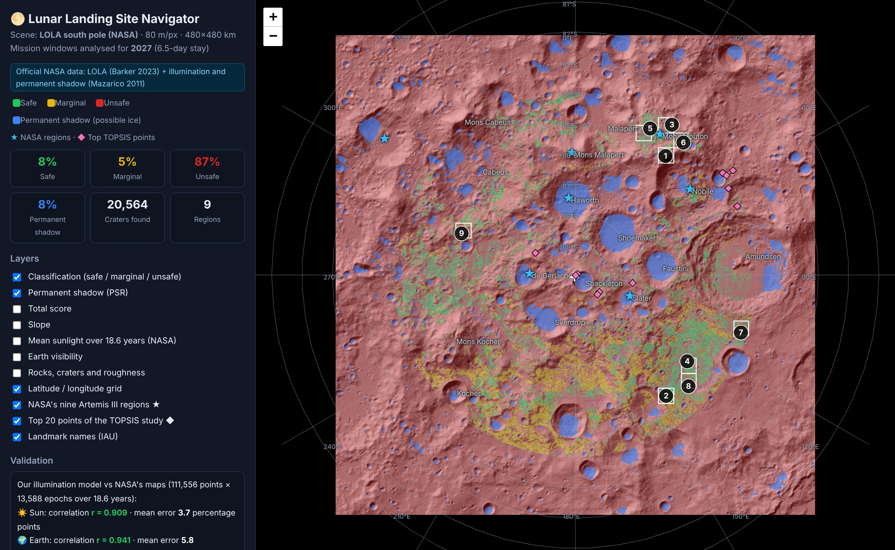
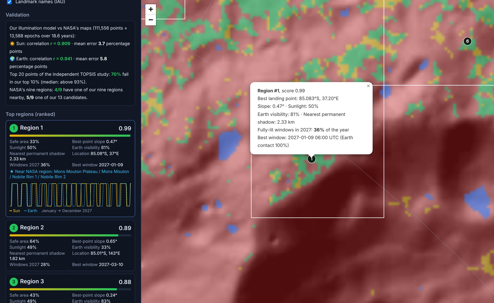

Lunar Landing Site Navigator
The complete report, from A to Z

★Executive summary
The idea and the result on one page
The problem: the lunar south pole is the first target of Artemis III because it has craters in permanent shadow that may hold water ice. But the Sun never rises more than about 1.5° above the horizon there, so shadows are long and the terrain is rough. Choosing where to land means analysing a very large amount of data.
The solution: a Python system that downloads 6 official NASA products (1.2 GB) and puts them on one 480×480 km grid at 80 m (36 million pixels). It then scores every point on five criteria: slope, sunlight, Earth visibility, distance to ice, and rocks. It picks 13 candidate regions, then the best 9, and computes the real 2027 launch windows for each one, hour by hour.
Best region: 85.08°S 37.2°E near Mons Mouton. It gets 6.5 days of continuous sunlight for 36% of the possible 2027 start times, Earth is visible 81% of the time, and the nearest permanent shadow (possible ice) is 2.33 km away. The best launch window starts on 2027-01-09. It stays the best region in 2026, 2027 and 2028.
The value: work that takes weeks of manual GIS analysis comes out of one command in about 3 minutes, and it can be repeated for any year or set of constraints. The core is open source; the Open-Core business model is in chapter 10.
Contents
- The problem, and why the south pole
- How NASA chooses landing sites
- System architecture
- The official data
- Method, step by step
- Results
- Accuracy checks
- Robustness tests
- Running it from A to Z
- Business model and hackathon pitch
- Limits and roadmap
- References and appendices
1The problem, and why the south pole
The most important place on the Moon, and the hardest place to land
Why it matters
- Craters in permanent shadow, at about −230 °C, that may hold water ice.
- Water means drinking water, oxygen, and hydrogen fuel for rockets.
- Nearby peaks are lit most of the time, which means almost continuous solar power.
Why it is hard
- The Sun never rises more than ~1.5° above the horizon, so any hill blocks it.
- Earth sometimes drops below the horizon and direct contact is lost.
- Slopes, craters and boulders; the lander needs a slope under 8° to 10°.
What makes a site safe
| Condition | Value in the system | Reason |
|---|---|---|
| Slope | red above 10°, yellow between 8° and 10° | keep the lander stable and upright |
| Sunlight | 6.5 days of continuous light (the mission length) | power and temperature |
| Contact with Earth | share of time Earth is above the horizon | direct-to-Earth (DTE) communication |
| Near permanent shadow | ideal ≤ 2 km, no value beyond 15 km | walking to the ice |
| Rocks and craters | roughness at 100 m + detected craters | landing safety |
| Exploration zone | within 6° of the pole (~84°S) | Artemis III requirement |
| Landing ellipse | a 200 m radius circle around each point must be fully safe | limited landing accuracy |
2How NASA chooses landing sites
The LRO spacecraft, and from 13 regions to 9
The LRO spacecraft (Lunar Reconnaissance Orbiter) has orbited the Moon since 2009 and collects data with three instruments:
| Instrument | Measures | In our project |
|---|---|---|
| LOLA | laser heights, and from them slope, roughness and illumination | Barker 2023 maps + Mazarico 2011 illumination maps |
| Diviner | temperature, and from it rock abundance | roughness from LOLA, with a --rocks option |
| LROC NAC | ~0.5 m images of craters and boulders | ready YOLO module (hazards.py) |
In 2022 NASA announced 13 candidate regions for Artemis III, each about 15×15 km. In October 2024 it narrowed them to 9 regions: Peak near Cabeus B, Haworth, Malapert Massif, Mons Mouton Plateau, Mons Mouton, Nobile Rim 1, Nobile Rim 2, de Gerlache Rim 2 and Slater Plain. According to NASA's summary (NTRS 20250011660), the downselection was based on:
- Year-round mission availability: all launch, orbit and lighting constraints combined.
- Terrain safety: a "sufficient" low-slope area, avoiding craters and boulders.
- Direct contact with Earth, and continuous lighting for the whole surface stay (5.75 to 6.25 days).
- Keeping several regions, because "each region alone offers limited opportunities".
3System architecture
From raw files to a landing decision
Code modules
| File | Role |
|---|---|
nasa.py | product catalogue, resumable download, reprojection onto one grid |
ephemeris.py | Sun and Earth positions (astropy/ERFA) + lunar orientation (IAU 2009) |
sunmodel.py | horizon ray-tracing and time-series visibility (numba, parallel) |
terrain.py · hazards.py | slope, roughness, crater detection, optional YOLO, hazard map |
scoring.py · regions.py | weighted score, classes, region selection, coordinate conversion |
nasa_pipeline.py | ties everything together: candidates, windows, final pick, validation |
reference.py | NASA's nine regions, the TOPSIS top 20 points, IAU landmarks |
experiments.py | robustness tests: weights, slope limit, years |
viz.py · report.py · cli.py | interactive map, images, report, command line |
4The official data
6 products from NASA Goddard, free and open
| Layer | File | Resolution | Reference |
|---|---|---|---|
| Elevation | LDEM_80S_80MPP_ADJ.TIF | 80 m | Barker et al. 2023 · PGDA 90 |
| Slope | LDSM_80S_80MPP_ADJ.TIF | 80 m | Barker et al. 2023 |
| Roughness (100 m) | LDRM_80S_50MPP_ADJ_ROUGH_100M.TIF | 50 m | Barker et al. 2023 |
| Average illumination | AVGVISIB_75S_120M_201608.TIF | 120 m | Mazarico et al. 2011 · PGDA 69 |
| Average Earth visibility | AVGVISIB_75S_120M_201608_EARTH.TIF | 120 m | Mazarico et al. 2011 |
| Permanent shadow | LPSR_75S_120M_201608.TIF | 120 m | Mazarico et al. 2011 |
- All files use a polar stereographic projection (sphere of radius 1737.4 km, longitude 0 pointing up), so they line up exactly with no distortion.
- We checked the coordinates: the centre of Shackleton crater (from the IAU gazetteer) comes out at −2788 m depth inside a permanent shadow, and the inverse transform returns the same coordinates.
- The illumination averages are computed hour by hour over a full 18.6-year cycle and include the polar winter. That is why even the best sites average only about 0.35 to 0.5, and we calibrated the thresholds on this distribution: median 0.29, top 1% at 0.49.

5Method, step by step
How every pixel becomes a decision
5.1 Slope, roughness and craters
Slope comes from NASA's official product. Roughness at a 100 m baseline becomes a 0 to 1 hazard index (above 3 m counts as rocky and rough). Craters are detected from the elevation map by subtracting a smoothed copy at 3 scales, which finds 20,564 craters larger than 400 m.
5.2 The physical illumination engine
- Horizon: for each point we trace rays over the LOLA map in 64 to 128 directions out to 150 km, with bilinear sampling and the Moon's curvature
d²/2R. - Sun and Earth positions: from the ERFA ephemeris built into astropy, converted to the lunar frame with the IAU 2009 model (Archinal 2011). Checked values: Sun elevation ±1.55°, Earth libration ±6.8° and ±7.7°, distance 357 to 407 thousand km.
- Visibility: for every moment we compute the body's elevation and azimuth in the grid frame (with parallax for Earth), compare it with the horizon, and compute the visible part of the disc (Sun 0.53°, Earth 1.9°).
- Speed: written in numba and runs on all cores: 111 thousand points × 13.6 thousand moments in about 35 seconds.
5.3 Scores and classes
| Criterion | Conversion to 0–1 | Weight |
|---|---|---|
| Slope | 1 − slope ÷ 10° | 30% |
| Sunlight | NASA average ÷ 0.5 (capped at 1) | 25% |
| Earth visibility | NASA average ÷ 0.6 (capped at 1) | 15% |
| Near permanent shadow | 1 up to 2 km, then falls to 0 at 15 km | 15% |
| Rocks and craters | 1 − hazard index | 15% |
Red: slope above 10°, permanent shadow, illumination below 0.15, hazard above 0.6, or outside the exploration zone, all grown by 200 m for the landing ellipse. Yellow: slope above 8°, Earth visibility below 0.15, or score below 0.55. Green: everything else.
5.4 Choosing regions
A 15×15 km window slides in 7.5 km steps. Region score = 30% for the safe area (full at 15% of its area) + 70% for the mean of the top 5% of scores inside it. We then pick 13 regions that do not overlap, with at least 20 km between their best points.
5.5 Launch windows and the final pick
For the best point of every candidate region we compute sunlight and Earth visibility every hour through the year (for an observer 2 m above the ground). A valid window = 6.5 continuous days with more than half of the Sun's disc visible every hour. Availability = the share of start times (every 6 hours) that give a valid window. Final score = 60% terrain score + 40% availability, and then the best 9.
6Results
The best 9 regions on real NASA data, with 2027 windows
| # | Location | Score | 2027 windows | Best 2027 window (month-day) | Slope | Sunlight | Earth | Ice | Safe | NASA region |
|---|---|---|---|---|---|---|---|---|---|---|
| 1 | 85.08°S 37.2°E | 0.992 | 36% | 01-09 | 0.47° | 50% | 81% | 2.33 km | 33% | Mons Mouton / Nobile |
| 2 | 85.01°S 143.0°E | 0.894 | 28% | 03-10 | 0.65° | 49% | 33% | 1.62 km | 64% | — |
| 3 | 84.11°S 32.7°E | 0.882 | 26% | 01-13 | 0.24° | 49% | 83% | 1.19 km | 43% | Mons Mouton |
| 4 | 85.34°S 127.6°E | 0.876 | 25% | 03-09 | 0.18° | 48% | 33% | 1.66 km | 77% | — |
| 5 | 84.58°S 27.0°E | 0.866 | 24% | 01-13 | 0.58° | 48% | 87% | 2.17 km | 51% | Mons Mouton |
| 6 | 84.38°S 39.2°E | 0.857 | 24% | 01-12 | 0.29° | 52% | 80% | 0.62 km | 39% | Mons Mouton / Nobile |
| 7 | 84.23°S 109.1°E | 0.852 | 24% | 02-10 | 0.29° | 46% | 34% | 2.15 km | 59% | — |
| 8 | 84.76°S 134.5°E | 0.843 | 23% | 03-09 | 0.32° | 46% | 33% | 0.56 km | 67% | — |
| 9 | 86.01°S 290.1°E | 0.838 | 23% | 06-22 | 0.57° | 51% | 56% | 0.64 km | 30% | — |
Sunlight and Earth visibility are NASA's 18.6-year averages at the best point. "Safe" = green share of the region. "Ice" = distance to the nearest permanent shadow.

7Accuracy checks
Three independent references
7.1 Our model vs NASA's official maps
We computed the 18.6-year average ourselves for 111,556 points × 13,588 moments and compared it point by point with the maps of Mazarico et al. (2011):
| Correlation r | Mean error | Bias | Error under 5 points | Error under 10 points | |
|---|---|---|---|---|---|
| ☀️ Sun | 0.909 | 3.7 points | -0.6 points | 78% | 91% |
| 🌍 Earth | 0.941 | 5.8 points | -2.3 points | 63% | 84% |

7.2 Against the independent TOPSIS study (arXiv:2406.19863)
This study ranked 1247 points in NASA's regions with TOPSIS and different data (5 m maps, horizon views, minerals). 70% of their top 20 points fall in the top 10% of our map, and the median is above 93%. Their best point (#358, Nobile Rim 2) scores 0.763 with us, higher than 94% of the area.
| Point | Region | Their R | Our score | Our percentile | Slope |
|---|---|---|---|---|---|
| 358 | Nobile Rim 2 | 0.6916 | 0.763 | 94% | 2.64° |
| 356 | Nobile Rim 2 | 0.6869 | 0.752 | 93% | 2.68° |
| 357 | Nobile Rim 2 | 0.6711 | 0.752 | 93% | 2.68° |
| 354 | Nobile Rim 2 | 0.6684 | 0.752 | 93% | 2.68° |
| 350 | Nobile Rim 2 | 0.661 | 0.745 | 92% | 2.61° |
| 355 | Nobile Rim 2 | 0.6487 | 0.752 | 93% | 2.68° |
| 352 | Nobile Rim 2 | 0.6455 | 0.785 | 96% | 1.54° |
| 351 | Nobile Rim 2 | 0.6408 | 0.745 | 92% | 2.61° |
| 353 | Nobile Rim 2 | 0.622 | 0.8 | 97% | 1.33° |
| 1121 | Amundsen Rim | 0.5653 | 0.866 | 100% | 0.42° |
| 1122 | Amundsen Rim | 0.5649 | 0.824 | 98% | 1.8° |
| 995 | Nobile Rim 2 | 0.5353 | 0.11 | 12% | 17.32° |
| 661 | Site 004 (near the pole) | 0.5294 | 0.099 | 7% | 30.28° |
| 998 | Nobile Rim 2 | 0.4916 | 0.866 | 100% | 1.57° |
| 1223 | Peak Near Shackleton | 0.4689 | 0.884 | 100% | 0.94° |
| 744 | Faustini Rim A | 0.4567 | 0.728 | 90% | 1.58° |
| 1043 | Nobile Rim 2 | 0.4373 | 0.263 | 68% | 1.16° |
| 657 | Site 004 (near the pole) | 0.4179 | 0.096 | 6% | 28.93° |
| 726 | de Gerlache Rim 2 | 0.3907 | 0.152 | 42% | 20.07° |
| 1005 | Peak Near Shackleton | 0.3714 | 0.221 | 67% | 0.67° |
7.3 Against NASA's nine regions
Our nine regions cover 4/9 of NASA's regions, and our 13 candidates cover 5/9. NASA does not publish region boundaries, so we place each one at the centre of the landmark it is named after (IAU gazetteer), with a match radius = landmark radius + 10 km (between 20 and 50 km).
| NASA region | Landmark | Radius | Our nearest region | Our regions inside | Best nearby score |
|---|---|---|---|---|---|
| Peak near Cabeus B | Cabeus B (crater) | 40 km | 122.7 km | — | 68% |
| Haworth | Haworth (crater) | 36 km | 105.8 km | — | 100% |
| Malapert Massif | Mons Malapert | 44 km | 82.0 km | — | 100% |
| Mons Mouton Plateau | Mons Mouton | 50 km | 11.5 km | #1, #3, #5, #6 | 100% |
| Mons Mouton | Mons Mouton | 50 km | 11.5 km | #1, #3, #5, #6 | 100% |
| Nobile Rim 1 | Nobile (crater) | 50 km | 41.3 km | #1, #6 | 100% |
| Nobile Rim 2 | Nobile (crater) | 50 km | 41.3 km | #1, #6 | 100% |
| de Gerlache Rim 2 | de Gerlache (crater) | 26 km | 78.6 km | — | 100% |
| Slater Plain | Slater (crater) | 23 km | 87.0 km | — | 100% |
8Robustness tests
Do the results change if we change the assumptions? (runtime 130.6 s)

8.1 Different weights for the decision maker
| Profile | Slope | Sunlight | Earth | Ice | Rocks | Shared with baseline |
|---|---|---|---|---|---|---|
| Baseline | 30% | 25% | 15% | 15% | 15% | 9/9 |
| Equal weights | 20% | 20% | 20% | 20% | 20% | 6/9 |
| Power first | 25% | 45% | 10% | 10% | 10% | 6/9 |
| Comms first | 25% | 20% | 35% | 10% | 10% | 4/9 |
| Science (ice) first | 25% | 15% | 10% | 40% | 10% | 7/9 |
| Safety first | 45% | 15% | 10% | 5% | 25% | 5/9 |
8.2 Maximum slope limit
| 8° | 10° (baseline) | 12° |
|---|---|---|
| 8/9 (safe 6.8%) | 9/9 (safe 8.2%) | 9/9 (safe 8.6%) |
8.3 Launch windows over three years
| Region | 2026 | 2027 | 2028 |
|---|---|---|---|
| #1 | 35% 2026-01-21 | 36% 2027-01-09 | 37% 2028-01-01 |
| #2 | 25% 2026-02-21 | 28% 2027-03-10 | 26% 2028-01-30 |
| #3 | 26% 2026-01-01 | 26% 2027-01-13 | 28% 2028-01-02 |
| #4 | 23% 2026-02-21 | 25% 2027-03-09 | 23% 2028-01-29 |
| #5 | 24% 2026-01-01 | 24% 2027-01-13 | 26% 2028-01-02 |
| #6 | 24% 2026-01-01 | 24% 2027-01-12 | 26% 2028-01-01 |
| #7 | 23% 2026-02-21 | 24% 2027-02-10 | 23% 2028-01-02 |
| #8 | 20% 2026-03-20 | 23% 2027-03-09 | 21% 2028-02-26 |
| #9 | 26% 2026-01-01 | 23% 2027-06-22 | 24% 2028-05-15 |
9Running it from A to Z
On your computer, and on GitHub's servers
9.1 On your computer
- Install Python 3.10 or newer, and Git.
- Get the project:
git clone https://github.com/ELD11q/-ahs.git cd -ahs/lunar-landing-navigator python -m venv .venv && source .venv/bin/activate # Windows: .venv\Scripts\activate pip install -r requirements.txt - Check that everything works:
python -m pytest -qshould print 15 passed. - Run the full analysis on NASA data:
python -m lunar_nav --nasa -o output # first run downloads ~1.2 GB python -m lunar_nav.experiments -o output # robustness tests (optional) - Open
output/landing_sites_map_en.htmlin a browser, and readoutput/REPORT_EN.md.
9.2 Useful options
| Option | What it does |
|---|---|
--year 2028 | launch-window year |
--max-slope 8 | slope limit |
--weights '{"illumination":0.4}' | change the criteria weights |
--half-width-km 240 --res 80 | area size and resolution |
--demo | fast demo mode with generated data |
--dem file.tif --pixel-size 20 | an elevation file of your choice |
9.3 On GitHub's servers
The file .github/workflows/lunar-navigator.yml runs the tests, then the full analysis on NASA data on every update (the data is cached). To run it by hand: Actions → Lunar Landing Navigator → Run workflow, then pick the mode (nasa / demo / custom) and the year. The results appear on the run page and download as an artifact called landing-sites-nasa.
9.4 Outputs
| File | Content |
|---|---|
landing_sites_map.html · landing_sites_map_en.html | interactive map that works offline (~5 MB), Arabic and English |
REPORT.md · REPORT_EN.md | report with every number, Arabic and English |
summary.png · validation.png | layer and validation panels |
ranked_regions.csv/json · validation.json | full data for programs and Excel |
10Business model and hackathon pitch
Open-Core: the core is open, advanced services are paid
Proposed plans
| Plan | Price | Includes | Customer |
|---|---|---|---|
| Open | free | full code, NASA data, map, report | students and researchers |
| Pro cloud | [$__ per month] | 5 to 20 m resolution, custom constraints, windows for any year, API | companies and teams |
| Enterprise | [$__ per study] | full site study for a specific mission, report, support | agencies |
Prices in brackets are placeholders, to be set after market validation.
Competitive edge
- NASA's internal tools are not public, and academic studies (such as TOPSIS) are one-off and done by hand in GIS software.
- Our system is open, repeatable and validated, and reruns the analysis for any year or constraints in minutes.
- It computes the real launch windows, which NASA says are decisive and which its published averages do not cover.
- Arabic and English, suited to the region's emerging space programmes.
The 3-minute hackathon pitch
- 30 s, the problem: the south pole has water, but landing there is hard.
- 30 s, the solution: one command turns NASA data into a decision.
- 60 s, live demo: open the map, click region 1, turn on the illumination layer.
- 30 s, accuracy: 0.91 and 0.94, 70%, and 4 of 9.
- 30 s, business model and roadmap.
Roadmap
| Stage | Time | Deliverables |
|---|---|---|
| First model ✓ | now | NASA data, 2027 windows, validation, GitHub Actions |
| Higher resolution | 3 months | 5 m LOLA maps for the final regions, LROC images + YOLO for boulders, per-pixel windows |
| Cloud platform | 6 months | web app, API, rover path planning into permanent shadow |
| Expansion | 12 months | the north pole, Mars, agency partnerships |
11Limits and roadmap
What the system can do, and what it cannot
- A research and education tool, not a certified flight tool.
- Boulders smaller than about 100 m do not show in LOLA data; they need LROC NAC images with a trained YOLO model (the code is ready, the trained model is not).
- Launch windows are computed for the best point of each candidate region, not for every pixel.
- The illumination model is very close to NASA's but not identical: the difference is 3.7 points for the Sun and 5.8 for Earth, because of horizon resolution and disc modelling.
- It does not include the NRHO orbit, launch trajectories, HLS lander constraints, or temperature.
- NASA's regions are placed at landmark centres, because their official boundaries are not published.
Code quality
- 15 automated tests, covering slope on a known surface, a reference horizon, astronomical libration, the stereographic transform, the full pipeline, and the maps (including a check that the English map has no Arabic text).
- Continuous integration on GitHub Actions on every update.
- Every number in this report is generated automatically from the result files (
docs/report/build_report.py).
12References and appendices
Scientific sources and data
Sources that came with the project idea
- NASA Scientific Visualization Studio: illumination at the south pole. svs.gsfc.nasa.gov/vis/a000000/a003500/a003587/
- NASA (2025). Artemis III Site Selection Update: Downselection From Thirteen to Nine Candidate Regions. NTRS 20250011660.
- Aerospace America (AIAA). The Choice. aerospaceamerica.aiaa.org/features/the-choice/
- Peña-Asensio, E., Neira-Acosta, Á.-S., Sánchez-Lozano, J.M. (2024). Evaluating potential landing sites for the Artemis III mission using a multi-criteria decision making approach. arXiv:2406.19863.
Data and methods
- Barker, M.K. et al. (2023). A New View of the Lunar South Pole from LOLA. NASA PGDA product 90.
- Mazarico, E., Neumann, G.A., Smith, D.E., Zuber, M.T., Torrence, M.H. (2011). Illumination conditions of the lunar polar regions using LOLA topography. Icarus 211, 1066–1081. PGDA product 69.
- Smith, D.E. et al. (2010). The Lunar Orbiter Laser Altimeter Investigation on the LRO Mission. Space Sci. Rev. 150.
- Archinal, B.A. et al. (2011). Report of the IAU WGCCRE: 2009. Celest. Mech. Dyn. Astr. 109, 101–135.
- Robinson, M.S. et al. (2010). LROC Instrument Overview. Space Sci. Rev. 150.
- Bandfield, J.L. et al. (2011). Lunar surface rock abundance … Diviner. JGR Planets 116.
- Robbins, S.J. (2019). A New Global Database of Lunar Impact Craters >1–2 km. JGR Planets 124.
- IAU / USGS. Gazetteer of Planetary Nomenclature.
- Astropy Collaboration (2022). The Astropy Project. ApJ 935, 167. · Lam, S.K. et al. (2015). Numba. LLVM-HPC.
Appendix A: glossary
| Term | Meaning |
|---|---|
| PSR | Permanently Shadowed Region |
| LOLA / LRO | Lunar Orbiter Laser Altimeter / Lunar Reconnaissance Orbiter |
| DEM | digital elevation model |
| Libration | the Moon's apparent wobble, which moves Earth in the polar sky |
| TOPSIS | a multi-criteria decision method |
| AEZ | Artemis Exploration Zone (within 6° of the pole) |
| NRHO | Near-Rectilinear Halo Orbit, used by Artemis |
lunar-landing-navigator/ · results results/nasa_2027/ · guide docs/guide/ · this report docs/report/